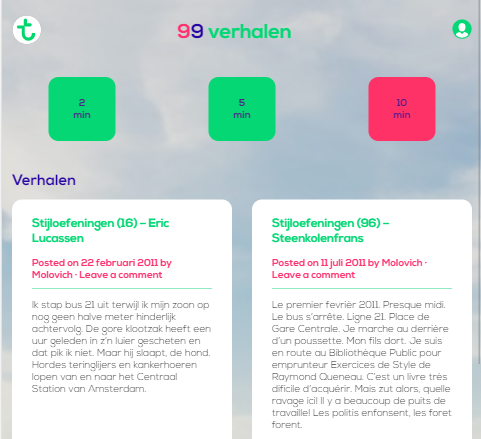

Voor dit project kwamen vier vakken samen. Design patterns, front end, vormgeving en project. Dit was een uitdaging, er moest een responsive site gemaakt worden voor een gekozen organisatie. Bij mij is dit Transavia geworden. De bedoeling was om een verhalen website te maken en daarbij drie verhalen responsive vorm te geven. Ik heb gekozen om een filter te maken die werkt met tijd. Als de gebruiker bijvoorbeeld bij de gate staat te wachten dan kan hij wel één verhaal lezen van twee minuten. Als de gebruiker langer de tijd heeft kan hij op vijf of tien minuten drukken. Dan zal er een gekozen set naar voren komen die te lezen is binnen de aangegeven tijd. Toen het project begon had ik al snel veel idëeen. Het is voor mij alleen moeilijk deze ook te verwezenlijke in code.
Tijdens dit project heb ik UX design, vormgeving en front end gecombineerd. Ik heb veel verschillende tools gebruikt zoals: photoshop, illustrator en adobe xd.
{kind=link}
Overzichtscherm
Op dit scherm heeft de gebruiker gekozen om op twee minuten te filteren. Hier krijgt hij meteen een verhaal te zien die hij kan gaan lezen.
{kind=link}
Responsive design
Dit was de eerste keer dat ik een responsive design moest maken. Uiteindelijk is dit goed gelukt. De verhalen schaalde goed mee en de verhalen kwamen met goede breakpoints naast elkaar te staan.
{kind=link}
Hoofdscherm 5 minuten
Dit is het scherm waar iedere gebruiker automtisch zal beginnen. Hier zijn een aantal verhalen bij elkaar gekozen die vijf minuten duren om te lezen.
{kind=link}
Verhaal: Zanikend
Hier is te zien hoe een verhaal eruitziet als hij is vormgegeven aan de hand van één thema woord.